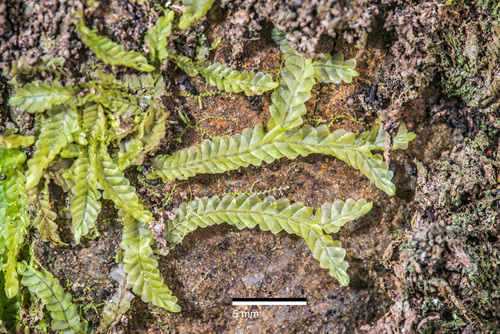

Lophocoleaceae
Crestwort Family (common name for Lophocolea)
Lophocoleaceae is a large and widespread family of leafy liverworts (order Jungermanniales). They are typically characterized by succubously inserted leaves that are often bilobed, distinct underleaves that are also often bilobed, and usually a prominent, often 3-keeled perianth terminal on stems or branches.
Overview
The Lophocoleaceae family is one of the most common and ecologically diverse families of leafy liverworts, found worldwide in various habitats, including soil, rocks, decaying wood, and occasionally as epiphytes. Key genera traditionally included are Lophocolea and Chiloscyphus, though recent taxonomic revisions often merge many Lophocolea species into a broader concept of Chiloscyphus. Other genera like Leptoscyphus and Heteroscyphus are also part of this family.
Plants in this family typically form creeping or ascending mats and are characterized by their leafy structure with succubous leaf insertion (leaves overlapping like upward-pointing shingles). The lateral leaves are frequently, but not always, bilobed at the apex. A third row of leaves, the underleaves, is usually present on the ventral side and is also commonly bilobed, often connected at the base to the lateral leaves. Sexual reproduction typically involves a prominent perianth (a protective structure around the developing sporophyte) that is often triangular in cross-section (3-keeled) and located terminally on main stems or long branches.
Quick Facts
- Scientific Name: Lophocoleaceae Vanden Berghen
- Common Name: Crestwort Family (for Lophocolea)
- Number of Genera: Approx. 10-15 (depending on classification, including Chiloscyphus, Lophocolea, Leptoscyphus, Heteroscyphus).
- Number of Species: Large, several hundred species globally.
- Distribution: Cosmopolitan, found in a wide range of habitats from temperate to tropical regions.
- Evolutionary Group: Bryophytes - Liverworts (Marchantiophyta) - Jungermanniopsida - Jungermanniales (often placed in suborder Lophocoleineae or Jungermanniineae).
Key Characteristics
Note: Lophocoleaceae are common leafy liverworts typically with succubous, bilobed leaves and underleaves, and a perianth.
Gametophyte (Leafy Shoot) Structure
The dominant phase is the leafy gametophyte:
- Form: Typically small to medium-sized, forming prostrate, creeping, or ascending mats or patches. Often pale green, yellowish-green, or sometimes brownish.
- Stems: Slender to moderately robust.
- Leaves: Arranged in two lateral rows.
- Shape: Variable, often ovate, oblong, or rectangular, typically shallowly to deeply bilobed at the apex, but sometimes unlobed or retuse (slightly notched). Lobes can be pointed or rounded.
- Insertion: Distinctly succubous (the upper/anterior edge of each leaf overlaps the lower/posterior edge of the leaf above it on the same side of the stem).
- Cells: Usually thin-walled (isodiametric to slightly elongated), often containing distinct oil bodies.
- Underleaves: Usually present and distinct, arranged in a row on the ventral side.
- Size: Variable, from smaller than to nearly as large as the lateral leaves.
- Shape: Typically deeply bilobed, with lobes often narrow and pointed. Margins may be entire or possess teeth or cilia. Often connate (fused) at the base on one or both sides with the adjacent lateral leaves.
- Branching: Variable, often predominantly intercalary (lateral or ventral), but terminal Frullania-type branching also occurs in some genera/species.
- Asexual Reproduction: Gemmae may be produced on leaf margins or tips in some species, but are less common than in families like Cephaloziaceae.
Reproductive Structures
Species can be monoicous or dioicous.
- Antheridia: Male organs are borne in the axils of modified saccate (pouched) leaves (bracts) forming an androecium. Androecia are often intercalary (located along a vegetative shoot) or on specialized short branches.
- Archegonia: Female organs are typically terminal on main shoots or long branches (less commonly on short branches). They are enclosed within bracts (similar to leaves but often larger/different shape) and a well-developed perianth. The perianth is usually prominent, often inflated below and contracted towards the mouth, characteristically 3-keeled (triangular in cross-section), and the mouth is frequently lobed or toothed.
Sporophyte
The sporophyte develops within the perianth:
- Foot: Embedded in the stem apex tissue.
- Seta: Distinct, elongating considerably at maturity, pale and translucent, raising the capsule well above the perianth.
- Capsule: Ovoid to cylindrical, typically dark brown or black when mature. Capsule wall is usually multistratose.
- Dehiscence: Capsule splits longitudinally into four straight valves upon maturity.
Spores and Elaters
Contained within the capsule.
- Spores: Small, spherical, typically finely papillose or nearly smooth.
- Elaters: Present, long and slender with 2 spiral thickenings, mixed among spores, aiding spore dispersal.
Field Identification
Identifying Lophocoleaceae often involves recognizing the combination of succubous leaves (often bilobed), distinct (often bilobed) underleaves, and the characteristic terminal perianth.
Primary Identification Features
- Succubous Leaf Insertion: Lateral leaves overlap like upward-pointing shingles.
- Bilobed Leaves (Common): Lateral leaves frequently divided into two lobes at the apex.
- Distinct Underleaves (Commonly Bilobed): A third row of leaves present on the ventral side, usually clearly visible and often bilobed, frequently fused at the base with lateral leaves.
- Perianth Present & Terminal: A prominent, often 3-keeled perianth located at the tip of main shoots or long branches is characteristic (contrasts with ventral perianths or perigynia in other families).
- Habitat Diversity: Found commonly on logs, soil, rocks in various forest types.
Secondary Identification Features
- Cell Structure: Thin-walled cells, presence/type of oil bodies (requires microscope).
- Androecia: Look for intercalary spikes of saccate male bracts.
- Gemmae: Less common, but sometimes present on leaf margins.
Seasonal Identification Tips
- Year-round: Vegetative features are readily observable.
- Reproductive Periods: Perianths are often conspicuous and persistent, making identification easier even when sporophytes are not mature. Sporophytes mature seasonally.
Common Confusion Points
Lophocoleaceae might be confused with other families having succubous leaves:
- Geocalycaceae: Often similar vegetatively (e.g., Harpanthus resembles Lophocolea), but Geocalycaceae typically have the perianth developing ventrally from a short branch, or possess a fleshy perigynium instead of a perianth.
- Plagiochilaceae: Often larger plants with strongly asymmetric leaves, frequently toothed margins, and leaves often decurrent down the stem. Perianths are typically laterally compressed, not 3-keeled. Underleaves often small or absent.
- Cephaloziaceae / Cephaloziellaceae: Often smaller plants, leaves usually deeply bilobed with pointed lobes. Underleaves often small or absent. Perianths may be 3-keeled but other features differ.
- Jungermanniaceae: Leaves are typically unlobed and rounded/ovate. Underleaves usually absent or very small. Perianths often different in shape and position.
- Calypogeiaceae: Distinguished by incubous leaves and a ventral perigynium.
Key differentiator: The combination of succubous leaves (often bilobed) + distinct, often bilobed underleaves + prominent terminal perianth (often 3-keeled) is characteristic of Lophocoleaceae.
Field Guide Quick Reference
Look For:
- Leafy shoots, often pale/yellowish green
- Leaves succubously inserted
- Leaves often bilobed
- Distinct, often bilobed underleaves
- Prominent perianth (often 3-keeled) terminal on shoots/branches
- Common on logs, soil, rocks
Key Distinctions:
- Leaf insertion succubous (unlike Calypogeiaceae)
- Perianth terminal & distinct (unlike Geocalycaceae's ventral/absent perianth/perigynium)
- Underleaves usually present & distinct (unlike many Jungermanniaceae, Plagiochilaceae)
- Leaves often bilobed (unlike many Jungermanniaceae)
Notable Examples
Includes common and widespread genera like Lophocolea and Chiloscyphus (often merged).

Lophocolea bidentata (or Chiloscyphus bidentatus)
(Bidentate Crestwort)
Extremely common and variable species found on soil, logs, and rocks in shaded, moist places worldwide. Characterized by pale green shoots, succubous leaves clearly divided into two pointed lobes (bidentate), and bilobed underleaves. Often fertile with typical 3-keeled perianths.

Lophocolea heterophylla (or Chiloscyphus profundus)
(Variable-leaved Crestwort)
Another very common species, especially abundant on rotting logs. Named 'heterophylla' because vegetative shoots often have bilobed leaves, while fertile shoots below the perianth have broader, unlobed or merely notched bracts. Underleaves are bilobed.

Chiloscyphus polyanthos
(Variable Pouchwort)
Common in wet habitats, often near streams or springs, sometimes submerged. Typically has broader, unlobed or only slightly retuse (notched) leaves, contrasting with the commonly bilobed leaves of many Lophocolea species. Underleaves are present and usually bilobed. Perianth is typical for the family.

Heteroscyphus species (e.g., H. argutus)
(Heteroscyphus)
A genus within the family, often found in tropical/subtropical regions. Can resemble Chiloscyphus but may differ in branching patterns or reproductive details. H. argutus often has toothed leaf margins.
Phylogeny and Classification
Lophocoleaceae is a major family within the Jungermanniales, traditionally central to the suborder Jungermanniineae or forming the core of its own suborder, Lophocoleineae, along with closely related families like Geocalycaceae and Plagiochilaceae. Molecular studies generally support the monophyly of a core group including Chiloscyphus and Lophocolea, but the boundaries and relationships with adjacent families (especially Geocalycaceae) can be complex and subject to ongoing research and taxonomic revision.
The merger of many species formerly placed in Lophocolea into Chiloscyphus reflects efforts to create more natural, monophyletic genera based on molecular data, even if it combines species with different leaf shapes (bilobed vs. unlobed). The family represents a successful evolutionary radiation of leafy liverworts adapted to a wide range of mesic habitats globally.
Position in Plant Phylogeny
- Kingdom: Plantae
- Division: Marchantiophyta (Liverworts)
- Class: Jungermanniopsida
- Order: Jungermanniales
- Suborder: Lophocoleineae (or Jungermanniineae)
- Family: Lophocoleaceae
Evolutionary Significance
Lophocoleaceae is significant for:
- Ecological Success: Represents a large, widespread, and ecologically diverse group of leafy liverworts, common in many terrestrial ecosystems.
- Taxonomic Complexity: Illustrates the challenges in defining generic boundaries based on morphology versus molecular data (e.g., the Lophocolea/Chiloscyphus complex).
- Core Lineage in Jungermanniales: Forms a central part of a major suborder, crucial for understanding the phylogeny and diversification of leafy liverworts.